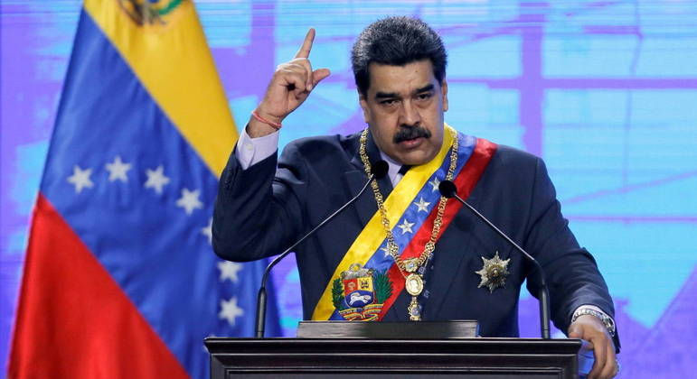
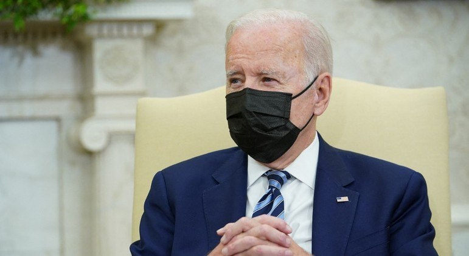
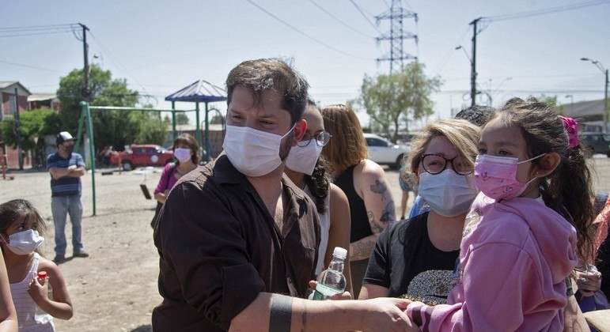
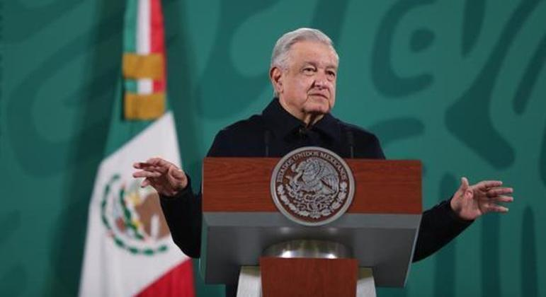
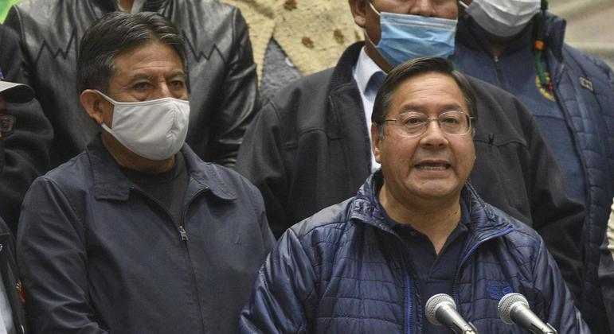

UE mantém sanções contra 55 funcionários do governo Maduro
Bloco econômico aplicou medidas pela primeira vez em 2017 e declara que ações não prejudicam a população da Venezuela.
Biden diz que 'considera' boicotar Jogos de Inverno de Pequim
Presidente dos EUA pensa em retirar o país da Olimpíada de Inverno na China por conta da questão humanitária em Xinjiang.
Chile se prepara para uma eleição presidencial acirrada
Com a divulgação de pesquisas proibida por lei, o país não tem ideia de como será o resultado do primeiro turno, no domingo.
Eliana Moares é eleita conselheira da Câmara de Comércio Brasil-França
Mandato da brasileira é de três anos e ela tem como missão fomentar projetos comerciais entre os dois países.
López Obrador, Biden e Trudeau se reúnem na Cúpula dos Três Amigos
Presidente do México deve falar sobre economia e vacinas anticovid-19 com líderes da América do Norte.
Governo da Bolívia revoga lei polêmica alvo de protestos no país
Manifestações forçaram o presidente Luis Arce a voltar atrás com projeto considerado invasivo para parte dos bolivianos.